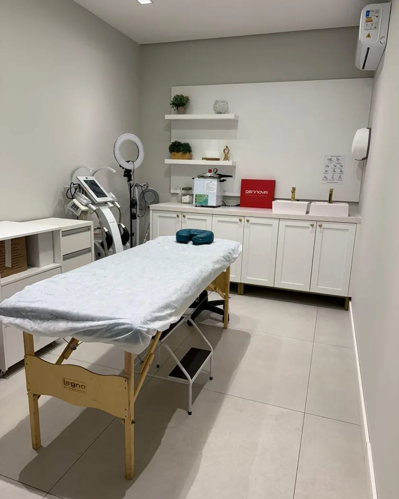

Harmonização Corporal
Tem um ponto do seu corpo que não obedece dieta nem treino. Não é falta de disciplina.
O Scizer é uma tecnologia coreana de ultrassom macrofocado para gordura localizada sem cirurgia: rompe as células de gordura no ponto exato (abdômen, flancos, culote e outras áreas) e o corpo as elimina naturalmente nas semanas seguintes. Não substitui emagrecimento e não trata obesidade: é para gordura localizada em quem já está perto do próprio peso, com um incômodo que resiste ao esforço.
Quando a gordura forma uma dobra que dá para pinçar, existe um segundo caminho, a criolipólise, e a avaliação diz qual dos dois responde melhor no seu caso.
- Para quem treina e se cuida, mas o abdômen inferior ou o flanco continuam lá.
- Para quem sente a roupa marcando sempre no mesmo lugar.
- Para quem quer refinar o contorno sem cirurgia, sem cinta e sem pausa na rotina.
As células rompidas são eliminadas pelo corpo e não se regeneram. O que muda o contorno depois é o peso, não o procedimento: ganho de peso aumenta as células que ficaram, ali ou em outra região. O número de sessões e a resposta variam de pessoa para pessoa, e isso entra no plano por escrito.

Todo procedimento injetável inclui retorno de revisão em 15 dias, sem custo. Os números acima são médias de prática clínica: a resposta é individual e o seu caso é estimado na avaliação.
Sobre o Scizer
Dá para tratar duas áreas na mesma sessão?
Sim. A sessão leva de 15 a 20 minutos para duas áreas, e a avaliação define quais fazem sentido tratar juntas.